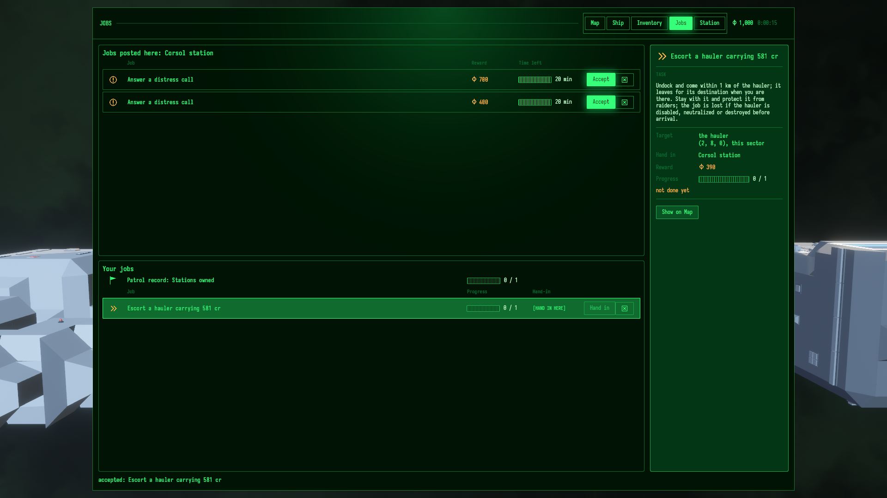
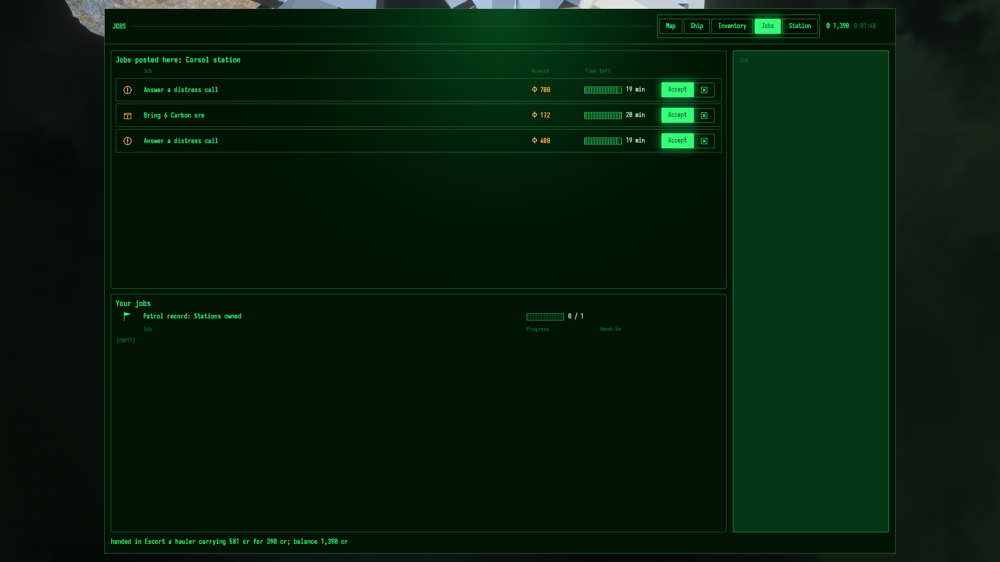
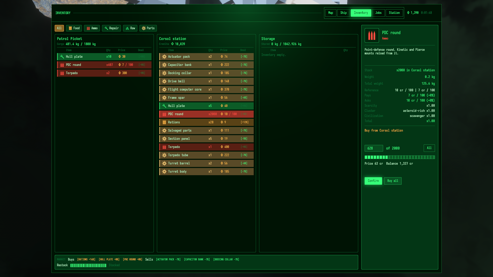
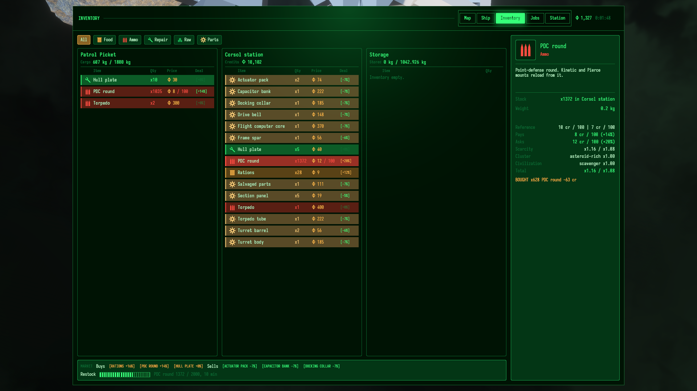

Bulk PDC lots and 2,000-round station stock: exact-commit evidence
Task 20261026-003806 (v0.17.0). Commit 8f9bf0ded "Trade PDC ammunition in affordable bulk lots". Report date 2026-10-30. This page shows that the approved change works as built in one shipped escort job. It is not a balance verdict.
Key result. On a clean tree at 8f9bf0ded, three runs of the same seed-2 escort job each paid a 390 cr reward. Each run then bought back every PDC round it spent at Corsol station, through the Inventory pane, at 10 cr ask / 7 cr bid per lot of 100 (all price factors x1.00). The Buy paid the lot share, rounded up. The station opened the Buy with 2,000 rounds.
Run 1 (captures on)
- PDC spent / bought
- 628 / 628
- Buy paid
- 63 cr
- Reward
- 390 cr
- Net after Buy
- 327 cr
- Station PDC stock
- 2000 → 1372
Run 2 (captures off)
- PDC spent / bought
- 1033 / 1033
- Buy paid
- 104 cr
- Reward
- 390 cr
- Net after Buy
- 286 cr
- Station PDC stock
- 2000 → 967
Run 3 (captures off)
- PDC spent / bought
- 87 / 87
- Buy paid
- 9 cr
- Reward
- 390 cr
- Net after Buy
- 381 cr
- Station PDC stock
- 2000 → 1913
Each run is shown alone. The rounds spent differ a lot for the same seed and commit (628, 1033, 87), and no cause is known. This page gives no average and no stable per-job figure. Three runs do not guarantee that a future job nets a profit or that a station has rounds left.
Labels used on this page: measured read from game state or a settled transaction in a run marker; derived arithmetic on measured values or on source rules; unit-tested proven by an existing unit test at this commit, not by a run; historical from the earlier report at a different commit, for context only.
1. The approved change
Paths are relative to the repository root at 8f9bf0ded. Links open the local file.
| Rule | Value or formula | Source |
|---|---|---|
| PDC round reference price | price_lot 100, ask_cr 10, bid_cr 7, 200 g | crates/nova_authoring/src/base_content/items.rs:60-67 (builder); generated assets/base/items/base.content.ron:12-21 |
| Price per lot | ItemPrice { ask_cr, bid_cr, lot } | crates/nova_gameplay/src/market.rs:307-319 |
| Buy | ceil(count x ask_cr / lot) | market.rs:322-326 |
| Sell | floor(count x bid_cr / lot) | market.rs:328-333 |
| Sell that earns 0 cr | refused with ZeroCredits before the stock, room and credit checks | crates/nova_gameplay/src/inventory.rs:912-914, 994-996 |
| Live quote | reference x scarcity x cluster x civilization, clamped, rounded once per lot | market.rs:389-444 (rounding at 430-436) |
| Station PDC opening floor | PDC_OPENING_ROUNDS = 2_000, applied with units.max(...) when the civilization fields a PDC | crates/nova_world_base/src/station_layout.rs:123-127, 506-508 |
| Item format | price_lot is a required field (no serde default); lint refuses 0 | inventory.rs:183-188, 200-203; crates/nova_assets/src/items.rs:129-131 |
| Job rewards priced from items | procure buy_cr(count) x 3/2, recover buy_cr(count) x 2 | crates/nova_gameplay/src/jobs.rs:1287, 1304 |
| Escort reward (unchanged) | cargo_cr / 2 + fee; here 581 / 2 = 290, + 100 = 390 | jobs.rs:1315-1321; accept markers |
| Changelog | three entries, one marked (breaking) | CHANGELOG.md:18-25 |
2. Runs and provenance
All three runs use the committed example examples/systems/system_job_ammo_economics.rs on HEAD 8f9bf0deddc3c92aa1218c5844780d813ec6ebad, branch master. git status --porcelain was empty before and after each run. Each timeline's run_start records git_sha 8f9bf0ded. Each run had DISPLAY and WAYLAND_DISPLAY unset and used xvfb-run -a with a 1920x1080x24 screen; the real display was not used. Renderer: the NVIDIA RTX 3060 Ti Vulkan ICD for all three. Fresh XDG directories per run. Full record: provenance.txt; wrapper: launch.sh.
| Run | Captures | Exit | Timeline end | Log checks | Evidence |
|---|---|---|---|---|---|
| 1 | On (NOVA_CAPTURE=1), 5 frames written, 4 kept | EXIT=0 | run_end Success, 41 entries | "escort job: PASS the hand-in paid 390 cr" (log line 340); "cycle complete, no panic" (line 369) | timeline.jsonl, run.log |
| 2 | Off (variables unset); 0 "Screenshot saved" lines | EXIT=0 | run_end Success, 56 entries | PASS line 342; no-panic line 365 | timeline.jsonl, run.log |
| 3 | Off (variables unset); 0 "Screenshot saved" lines | EXIT=0 | run_end Success, 50 entries | PASS line 313; no-panic line 336 | timeline.jsonl, run.log |
Each log also has the step ammo economics: assert the Buy. That step asserts that the Buy moved exactly the planned quantity, that the player paid exactly buy_cr(quantity) at the quoted lot price, and that the station took the same credits (examples/systems/system_job_ammo_economics.rs:766-811). The run would panic on a mismatch; each run instead logs "cycle complete, no panic". The exit codes and wall-clock times are a record only. This page makes no timing claim.
3. Per-run results
| Measure | Run 1 | Run 2 | Run 3 | Label and source marker |
|---|---|---|---|---|
| Start: credits / hold PDC / magazines | 1000 / 1000 / 500+500 | 1000 / 1000 / 500+500 | 1000 / 1000 / 500+500 | measured ammo economics: accept |
| PDC pool at accept | 2000 | 2000 | 2000 | measured fight ledger start_pool |
| PDC consumed = turret rounds fired | 628 = 628 | 1033 = 1033 | 87 = 87 | measured fight ledger, residual 0, none lost or stranded |
| Usable pool at hand-in | 1372 | 967 | 1913 | measured end_usable_pool; 2000 minus consumed |
| Reward credited | 390 | 390 | 390 | measured ammo economics: hand-in |
| Player credits at hand-in | 1000 → 1390 | 1000 → 1390 | 1000 → 1390 | measured |
| Station credits at hand-in | 10429 → 10039 | 10429 → 10039 | 10429 → 10039 | measured |
| Station PDC stock / target before Buy | 2000 / 2000 | 2000 / 2000 | 2000 / 2000 | measured ammo economics: market |
| Buy quantity | 628 | 1033 | 87 | measured ammo economics: buy; equals consumed |
Expected price ceil(q x 10 / 100) | ceil(62.8) = 63 | ceil(103.3) = 104 | ceil(8.7) = 9 | derived; the marker's expected_cr agrees |
| Paid by player / taken by station | 63 / 63 | 104 / 104 | 9 / 9 | measured paid_cr, station_took_cr |
| Player credits at Buy | 1390 → 1327 | 1390 → 1286 | 1390 → 1381 | measured |
| Station credits at Buy | 10039 → 10102 | 10039 → 10143 | 10039 → 10048 | measured |
| Player hold PDC at Buy | 407 → 1035 | 0 → 1033 | 970 → 1057 | measured |
| Station PDC stock at Buy | 2000 → 1372 | 2000 → 967 | 2000 → 1913 | measured |
| Net after Buy (reward - paid) | 327 | 286 | 381 | measured ammo economics: net net_after_buy_cr |
| Every spent round replaced | yes | yes | yes | measured replaced_every_spent_round |
| Share of station stock taken | 31.4% | 51.65% | 4.35% | derived quantity / 2000 |
Conservation derived: in each run the player's credit loss equals the station's credit gain, and the player's round gain equals the station's round loss. The usable pool at hand-in equals the hold plus both magazines (run 1: 407 + 465 + 500; run 2: 0 + 500 + 467; run 3: 970 + 443 + 500).
Torpedoes: 0 spent in every run (8 at accept, 8 at hand-in). The single raider survived in each run; the job completes when the hauler reaches its mark (outcome: the escorted hauler survives the ambush to its mark, raiders_left 1).
4. Stock and credits charts
Scroll the chart sideways on a narrow screen.
Scroll the chart sideways on a narrow screen.
5. Quote and price factors
| Field | Value | Label |
|---|---|---|
| Station | Corsol station, sector_2_8_0_cluster_1_5_0_station_0; trades, has a trader market | measured |
| Stock / target | 2000 / 2000 | measured |
| Ask / bid / lot | 10 cr / 7 cr per 100 rounds; reference 10 / 7, price_lot 100 | measured |
| Ask factors | scarcity 1.0, cluster 1.0, civilization 1.0, total 1.0; not clamped | measured |
| Pane row texts | ["[+0%]", " / 100", "10", "x2000", "PDC round"] | measured pane_row_texts |
| Quote after the Buy, run 1 | ask 12 / 100 (+20%), bid 8 / 100 (+14%); scarcity x1.16 / x1.08 | screen only (Figure 6); no marker records it |
| The same, from the rule | share 1372 / 2000 = 0.686; ask factor 1.5 - 0.5 x 0.686 = 1.157, 10 x 1.157 = 11.57, rounds to 12; bid factor 1.25 - 0.25 x 0.686 = 1.079, 7 x 1.079 = 7.55, rounds to 8 | derived from market.rs:250-261, 430-436 and starved factors at crates/nova_authoring/src/base_content/market.rs:20-23; agrees with the screen |
| Restock 1372 to 2000 (run 1) | drift target x elapsed / 1800 s: 628 rounds need about 565 s of play | derived from market.rs:452-466, base_content/market.rs:38; the screen's restock strip reads "1372 / 2000, 10 min" |
A lower stock raises the ask. A later Buy at the same station after a large one pays more per lot until the stock recovers. No run makes a second Buy, so this is a rule reading, not a measurement.
6. Lot rounding and the zero-credit Sell
Runtime. All three Buys were partial lots (628, 1033, 87 rounds). Each paid the rounded-up share: 63, 104 and 9 cr measured. No run made a Sell.
Unit tests unit-tested, 6 passed at 8f9bf0ded (unit/cargo-test-nova_gameplay.log):
| Test | What it asserts | Source |
|---|---|---|
a_buy_of_part_of_a_lot_rounds_its_credits_up | buy_cr: 1 → 1, 99 → 10, 100 → 10, 101 → 11, 2000 → 200, u32::MAX → 429496730 | crates/nova_gameplay/src/market.rs:948-956 |
a_sell_of_part_of_a_lot_rounds_its_credits_down | sell_cr: 14 → 0, 15 → 1, 100 → 7, 199 → 13, 2000 → 140 | market.rs:958-965 |
a_lot_of_one_prices_each_item | a lot of 1 keeps per-item pricing: 3 at 16/12 → 48 / 36 | market.rs:967-975 |
a_market_factor_prices_the_whole_lot | factors scale the lot price once (10/7 at x2.0/x1.5 → 20/11 per 100), then a trade takes its share | market.rs:977-1000 |
a_pdc_trade_pays_its_share_of_the_lot_price | trade plan: Buy 1 → 1, 100 → 10, 2000 → 200; owned-station Buy 150 at bid → 11; Sell 15 → 1, 150 → 10 | crates/nova_gameplay/src/inventory.rs:2289-2325 |
a_sale_that_earns_no_credit_is_refused | Sell 14 → Err(ZeroCredits), also with a full partner and 0 partner credits; Sell 15 → 1 cr; Sell 0 → ZeroQuantity | inventory.rs:2327-2366 |
The zero-credit refusal is proven only by unit tests. A player can still sell 15 or more rounds.
7. Station opening floor: unit test vs run
unit-tested The floor
a_station_that_stocks_pdc_rounds_opens_with_two_thousand passed (unit/cargo-test-nova_world_base.log; crates/nova_world_base/src/station_layout.rs:2050-2121). With 1 kg rounds a generated station opens with exactly 2,000; with 1 g rounds it opens with more; every other stack is equal in both. That is the floor, and it takes nothing from other goods.
measured The run
Corsol station read 2000 / 2000 (stock / target) after the hand-in, at one station, seed 2. The run does not read stock at generation. From the run alone you cannot tell the floor from a natural share of 2,000.
historical Context only
The earlier report read 189 / 189 at the same station at ed7204ad7, with the same 200 g round. A move from 189 to 2000 agrees with the floor. It is a cross-commit reading on a dirty tree, so it is not proof.
Saved stock and target derived from source, not run
- A trader's market target is the stock it spawns with (crates/nova_world_base/src/sector_ships.rs:326-344; stations at crates/nova_world_base/src/clusters.rs:1872-1873). So a station that gets the floor also gets a PDC target of at least 2,000, and restock drifts back toward it.
- The floor acts only at generation. Once a station is frozen (a retired sector or a world save), its record carries its own hold and market target (crates/nova_scenario/src/objects/spaceship.rs:587-603, 620-627, 924, 1082-1086; crates/nova_scenario/src/objects/station.rs:550-559). It thaws with that saved stock and target, not a new floor. A held (pending) station is regenerated instead (crates/nova_world_base/src/save/mod.rs:854).
- A world save written before
8f9bf0dedshould not load at all: the save header pins the content catalog digest (save/mod.rs:118-119), Load refuses a different digest (save/mod.rs:1560-1565), and the digest covers every effective content item (crates/nova_assets/src/merge.rs:936-975), which includes the changedPdcRounditem. So no old save should mix the old 189-round target with the new price. No load of an old save was run for this page. PDC_OPENING_ROUNDSis a code constant, not content. A later change to it alone would not move the catalog digest, and saves made at this commit would keep their 2,000 targets.
8. Screenshots
Four frames written by run 1 under its own Xvfb screen (1920x1080, NVIDIA renderer) and inspected for this report. They show the UI path. The credit and round transfers are proven by the markers and the Buy assert, not by the pictures. Run 1 armed captures, so its frame sequence differs from runs 2 and 3. The fifth frame (job-escort-inspector-done.png) was not copied; its hash is in SHA256SUMS.source.


job-escort-board.png). Balance 1,000 cr; escort reward 390 cr; "not done yet".

job-escort-done.png). Status line: "handed in Escort a hauler carrying 581 cr for 390 cr; balance 1,390 cr".

ammo-economics-buy-draft.png). Station row "x2000 10 / 100 [+0%]"; asks "10 cr / 100 (+0%)", pays "7 cr / 100"; quantity 628 of 2000; "Price 63 cr Balance 1,327 cr". This is a draft, not yet settled.

ammo-economics-bought.png). "BOUGHT x628 PDC round -63 cr"; balance 1,327; station credits 10,102; station row x1372, player row x1035. The post-Buy quote (12 / 100, scarcity x1.16 / x1.08) is screen only.9. What is real and what is fixture
| Step | How | Source |
|---|---|---|
| Berth for the Accept and for the Hand in | Fixture. The walk sets the player's position, rotation and velocity onto the station berth, then requests the dock | examples/systems/shared/located_jobs.rs:658-708; example doc system_job_ammo_economics.rs:30-34 |
| Accept, Hand in | Live Jobs pane buttons, activated by name | located_jobs.rs:710-719 |
| Escort flight, ambush, fire | Real. GOTO flight, formation, the hull's own turrets on the weakest raider. Nothing teleports the hauler | located_jobs.rs:28-35 |
| Inventory Buy | Real. Row selected by Activate, Confirm by a pointer click; settled by the game's trade path | system_job_ammo_economics.rs:36-37 |
| Credits, ammunition, stock | Nothing added or set unlimited by the example | system_job_ammo_economics.rs:33-34 (claim); the walk adds none |
The trigger is scripted: the autopilot holds fire on the raider. It does not model a player's fire discipline or travel between stations. The berth teleports skip the trip to and from the station.
10. Limits and caveats
- No balance causality. These runs show the lot price and the Buy work as built. They do not show that the job is balanced, that bulk lots caused a profit in general, or what a player would spend.
- Wide spread, no cause. 628, 1033 and 87 rounds on the same seed and commit. Do not average them. Run 1 armed captures; runs 2 and 3 did not.
- The stock can still run out. 2,000 is a finite stock and target, not a supply guarantee. Run 2 alone took 1,033. Two sorties of that size (2,066 rounds) exceed 2,000 if the stock has not recovered in between, and the Buy plan then caps at the stock. A lower stock also raises the ask (section 5). Restock is
target x elapsed / 1800 sof play. Other stations, other civilizations, and stations whose weapons do not reload PDC rounds were not checked. - One job kind, one station, one seed. Escort at Corsol station, seed 2,
militarystart. Not neutralize, distress, procure or recover. - Preloaded start. 2,000 rounds and 1,000 cr at the start. One job does not show a chain of jobs.
- Not counted: repairs, torpedoes (0 spent), travel, time, board refresh fees.
- Host load. An external process loaded the host during the runs (load average 13.85 at launch). The
nova_gameplayunit test overlapped run 1. No timing claim is made. - Saves. The floor and its target act at generation only; frozen stations keep their saved stock and target, and an old save is refused by its catalog digest (section 7). Source reading, not a load run.
- CI does not run this example (section 13).
11. What dies and what may break
| Item | Detail | Source |
|---|---|---|
| Dies: per-round PDC price | 4 cr ask / 3 cr bid per round historical is replaced by 10 / 7 per 100 rounds | items.rs:60-67 |
Dies: count x ask_cr trade arithmetic | Buys, Sells, job goods, refit and station worth now go through buy_cr / sell_cr | inventory.rs:979-992, jobs.rs:1287, 1304 |
| Dies: Sells under one credit | A Sell of 1-14 PDC rounds at reference bid is refused (ZeroCredits) | inventory.rs:994-996 |
| (breaking) Mod format | Every Item must state price_lot. A mod item without it fails lint, then load. The example mod is migrated | inventory.rs:183-203; crates/nova_assets/src/items.rs:129-131; assets/mods/example/example.content.ron:875-895; CHANGELOG.md:25 |
| May break: economy balance | PDC rounds now cost about 1/40 of the old ask. Procure or recover rewards that name PDC rounds, start-role kit worth and station prices change with it | crates/nova_authoring/src/base_content/start_roles.rs:4-8 |
| May break: station hold fit | The 2,000-round floor adds mass (400 kg at 200 g); a station whose stock outweighs its hull fails its sector with station_stock | station_layout.rs:123-127, 455-460 |
12. Historical reference (not a before/after)
The earlier investigation is REPORT.html (evidence in evidence/run{1,2,3}/). It ran at ed7204ad7 on a dirty tree, with a reconstructed launch line for run 1 and a different renderer for run 1. The runs on this page are different runs at a different commit. The two sets are not a controlled, matched before/after. Use the old figures only to read what the old rules were.
| Field | Prior report, ed7204ad7 | This report, 8f9bf0ded |
|---|---|---|
| PDC price | 4 cr ask / 3 cr bid per round historical | 10 / 7 per 100 measured |
| Corsol PDC stock / target | 189 / 189 historical | 2000 / 2000 measured |
| Rounds spent (capture-off runs) | 1057, 136 historical | 1033, 87 (run 1 with captures: 628) measured |
| Net after Buy (capture-off runs) | -366 (189 of 1057 bought, stock-capped), -154 historical | 286, 381 (run 1: 327); all spent rounds bought measured |
The spend figures overlap in range but come from separate runs. The spread is not explained in either report, so the change in net cannot be split between the price change and the spend.
13. CI at this commit
GitHub Actions run 41038537281 ("CI", push to master) has head SHA 8f9bf0deddc3c92aa1218c5844780d813ec6ebad, the exact commit. Conclusion: success. All 7 jobs succeeded:
| Job | Conclusion |
|---|---|
| fmt / clippy / test | success |
| check / default features | success |
| clippy / wasm32 | success |
| probe / smoke | success |
| autopilot example | success |
| web / npm suite + python tests | success |
| dependency license gate | success |
The "autopilot example" job runs cargo test -p nova_autopilot --test autopilot_example (.github/workflows/ci.yaml:391-394), not system_job_ammo_economics. The runtime evidence on this page comes only from the three local runs.
14. Reproduce
The exact harness was the bash wrapper launch.sh, run as launch.sh <run-dir> <capture:1|0>. It records the command, HEAD, git status, UTC start and end, and the exit status. It is kept as a historical record of what ran.
To repeat one capture-off run from fish, on a clean tree at 8f9bf0ded, from the repository root. The command unsets DISPLAY and WAYLAND_DISPLAY and starts its own Xvfb server with xvfb-run -a; it never uses your desktop display. Drop VK_DRIVER_FILES on a host without the NVIDIA ICD.
set -l D /tmp/nova-bulk-pdc-repro/off1
mkdir -p $D/xdg/config $D/xdg/data $D/xdg/cache $D/xdg/state
env -u DISPLAY -u WAYLAND_DISPLAY -u NOVA_CAPTURE -u NOVA_CAPTURE_DIR \
NOVA_AUTOPILOT=1 NOVA_AUTOPILOT_DEADLINE=2400 \
NOVA_PROBE_TIMELINE=$D/timeline.jsonl \
VK_DRIVER_FILES=/run/opengl-driver/share/vulkan/icd.d/nvidia_icd.json \
ALSA_CONFIG_PATH=/dev/null \
XDG_CONFIG_HOME=$D/xdg/config XDG_DATA_HOME=$D/xdg/data \
XDG_CACHE_HOME=$D/xdg/cache XDG_STATE_HOME=$D/xdg/state \
RUST_LOG=info \
nix develop --command xvfb-run -a -s "-screen 0 1920x1080x24" \
cargo run --example system_job_ammo_economics --features debug >$D/run.log 2>&1
echo "exit $status"
For a capture run, add NOVA_CAPTURE=1 NOVA_CAPTURE_DIR=$D/captures after the -u options. Capture arms on the variable's presence, so a capture-off run must leave it unset. Judge the run by its ammo economics: buy and net markers and the "cycle complete, no panic" line, not by the exit code. The rounds spent will differ from run to run.
The unit tests, as recorded in unit/commands.txt:
nix develop --command cargo test -p nova_gameplay --lib -- a_buy_of_part_of_a_lot_rounds_its_credits_up a_sell_of_part_of_a_lot_rounds_its_credits_down a_lot_of_one_prices_each_item a_market_factor_prices_the_whole_lot a_pdc_trade_pays_its_share_of_the_lot_price a_sale_that_earns_no_credit_is_refused nix develop --command cargo test -p nova_world_base --lib -- a_station_that_stocks_pdc_rounds_opens_with_two_thousand
15. Evidence files and hashes
All files are in evidence/bulk-pdc-8f9bf0ded/. SHA256SUMS covers the copies here; SHA256SUMS.source covers the /tmp originals. Each run.log copy has ANSI color codes removed, so its hash differs from the source hash; timelines, PNGs, unit logs and launch.sh are byte copies with equal hashes. sha256sum -c SHA256SUMS passed for all 16 entries when this page was written.
| File | sha256 |
|---|---|
| launch.sh | 28973328e151d6d463546e31d1c2487230c6f4a498c59858230b4284d7c768a9 |
| provenance.txt | c687bdb912d0dde238de6f2a722db354e2b66dfacc31d360eb804ccc1a4efa2e |
| run1-capture/captures/ammo-economics-bought.png | 2aef0c004b623d380c6954dd577687505fd5dc8ea7b272b1b38467e048e8fcec |
| run1-capture/captures/ammo-economics-buy-draft.png | f3d48807f42cf05be657d0c44a98eb6f43d7997e77f99b1cc6fa0b830b4b19eb |
| run1-capture/captures/job-escort-board.png | 14b8aa992f060d4719811bb2f1ab66e66f28eadf73de35c5913f812882f37125 |
| run1-capture/captures/job-escort-done.png | b4391b2a4767e166133b564838e6c0843ba01dcb922063d346069a88f7105e90 |
| run1-capture/run.log | ba674b3ceb79733e4190ed452eaec2aaf9c52922f2ef2037e61ec20522abd057 |
| run1-capture/timeline.jsonl | 0e44f2fbe3670398054d622ef6f587a0cdd0bcc7715ca2c528da6064d8da1f5c |
| run2-nocapture/run.log | f764ee6cd1532eaed834570012c931bcba5bf05cefe22580e26deccb57f9e1a3 |
| run2-nocapture/timeline.jsonl | 61651af1d05f3c7760cd558e49f3d9bca4248c82ee7b2f4e055fb5fb03d058b8 |
| run3-nocapture/run.log | 9482a6fed7ac6fc2c72113428773a86efaf4dfe6a1a1a1e54dea5d55e51a7e6b |
| run3-nocapture/timeline.jsonl | d0412dfc8ef3771fda67549c5600f7f8e4f510b77df55765d86762c32c4fe648 |
| SHA256SUMS.source | 64769cb1b359a6229052b4580202c5aa46b44846f530484ab8175ebde4af8aec |
| unit/cargo-test-nova_gameplay.log | 1565c77b71137e4cb24192bc8dbd2f3af91bdbfd6eda697629ca9f04ed57fc05 |
| unit/cargo-test-nova_world_base.log | 40e4681e4ad803e5a35c026c4b9a687d709ce455ccc1db286078a42e957b1bdc |
| unit/commands.txt | b3749e8d78110c9154cfcd2344d0bf12a4d4d281fa3d7c2e873004eaea9d629e |
16. Raw JSONL markers
Verbatim lines from each timeline: accept, fight ledger, hand-in, market, buy and net.
Run 1 (captures on)
sha256 0e44f2fbe3670398054d622ef6f587a0cdd0bcc7715ca2c528da6064d8da1f5c, evidence/bulk-pdc-8f9bf0ded/run1-capture/timeline.jsonl, 42 lines; 6 shown.
{"t_real":21.580050013,"frame":215,"scenario_elapsed":15.338980022999998,"kind":"marker","name":"ammo economics: accept","data":{"job":{"job":"sector_2_8_0_cluster_1_5_0_station_0#1.0","poster":"sector_2_8_0_cluster_1_5_0_station_0","hauler":"sector_2_8_0_cluster_1_5_0_station_job_1_0_hauler_0","cargo_cr":581,"raiders":1,"reward_cr":390},"snapshot":{"player_cr":1000,"hold":{"PdcRound":1000,"Torpedo":2},"magazines":[{"section":"1563v1","name":"Torpedo Bay (Serpent)","item":"Torpedo","rounds":6,"capacity":6,"active":true},{"section":"1501v1","name":"PDC Turret (Kinetic)","item":"PdcRound","rounds":500,"capacity":500,"active":true},{"section":"1499v1","name":"PDC Turret (Kinetic)","item":"PdcRound","rounds":500,"capacity":500,"active":true}]}}}
{"t_real":117.74996697,"frame":1679,"scenario_elapsed":108.3563855159999,"kind":"marker","name":"ammo economics: hand-in","data":{"job":"sector_2_8_0_cluster_1_5_0_station_0#1.0","reward_cr":390,"player_cr_before":1000,"player_cr_after":1390,"credited_cr":390,"station_cr_before":10429,"station_cr_after":10039,"station_paid_cr":390}}
{"t_real":117.74996697,"frame":1679,"scenario_elapsed":108.3563855159999,"kind":"marker","name":"ammo economics: fight ledger","data":{"items":[{"item":"PdcRound","magazines_at_accept":2,"start_pool":2000,"end_usable_pool":1372,"consumed":628,"stranded_in_disabled":0,"lost_with_section":0,"turret_rounds_fired":628,"residual":0},{"item":"Torpedo","magazines_at_accept":1,"start_pool":8,"end_usable_pool":8,"consumed":0,"stranded_in_disabled":0,"lost_with_section":0,"turret_rounds_fired":null,"residual":null}],"lost_magazines":[],"accept":{"player_cr":1000,"hold":{"PdcRound":1000,"Torpedo":2},"magazines":[{"section":"1563v1","name":"Torpedo Bay (Serpent)","item":"Torpedo","rounds":6,"capacity":6,"active":true},{"section":"1501v1","name":"PDC Turret (Kinetic)","item":"PdcRound","rounds":500,"capacity":500,"active":true},{"section":"1499v1","name":"PDC Turret (Kinetic)","item":"PdcRound","rounds":500,"capacity":500,"active":true}]},"hand_in":{"player_cr":1390,"hold":{"PdcRound":407,"Torpedo":2},"magazines":[{"section":"1563v1","name":"Torpedo Bay (Serpent)","item":"Torpedo","rounds":6,"capacity":6,"active":true},{"section":"1501v1","name":"PDC Turret (Kinetic)","item":"PdcRound","rounds":465,"capacity":500,"active":true},{"section":"1499v1","name":"PDC Turret (Kinetic)","item":"PdcRound","rounds":500,"capacity":500,"active":true}]}}}
{"t_real":119.244058433,"frame":1710,"scenario_elapsed":108.3563855159999,"kind":"marker","name":"ammo economics: market","data":{"station":"sector_2_8_0_cluster_1_5_0_station_0","station_name":"Corsol station","trades":true,"has_trader_market":true,"item":"PdcRound","stock":2000,"target_stock":2000,"ask_cr":10,"bid_cr":7,"lot":100,"reference_ask_cr":10,"reference_bid_cr":7,"price_lot":100,"factor_scarcity_ask":1.0,"factor_cluster_ask":1.0,"factor_civilization_ask":1.0,"factor_total_ask":1.0,"clamped":false,"pane_row":"InventoryRowPartnerPdcRound","pane_row_texts":["[+0%]"," / 100","10","x2000","PDC round"],"consumed":628,"derived_replacement_cr":63,"player_cr":1390,"player_free_g":1318600,"buy_quantity":628}}
{"t_real":124.096516366,"frame":1746,"scenario_elapsed":108.3563855159999,"kind":"marker","name":"ammo economics: buy","data":{"quantity":628,"quoted_ask_cr":10,"lot":100,"expected_cr":63,"player_cr_before":1390,"player_cr_after":1327,"paid_cr":63,"station_cr_before":10039,"station_cr_after":10102,"station_took_cr":63,"player_rounds_before":407,"player_rounds_after":1035,"station_rounds_before":2000,"station_rounds_after":1372}}
{"t_real":124.096516366,"frame":1746,"scenario_elapsed":108.3563855159999,"kind":"marker","name":"ammo economics: net","data":{"reward_cr":390,"credited_cr":390,"pdc_consumed":628,"pdc_bought":628,"buy_paid_cr":63,"derived_full_replacement_cr":63,"net_after_buy_cr":327,"replaced_every_spent_round":true}}
Run 2 (captures off)
sha256 61651af1d05f3c7760cd558e49f3d9bca4248c82ee7b2f4e055fb5fb03d058b8, evidence/bulk-pdc-8f9bf0ded/run2-nocapture/timeline.jsonl, 57 lines; 6 shown.
{"t_real":11.131659338,"frame":215,"scenario_elapsed":5.514567603000001,"kind":"marker","name":"ammo economics: accept","data":{"job":{"job":"sector_2_8_0_cluster_1_5_0_station_0#1.0","poster":"sector_2_8_0_cluster_1_5_0_station_0","hauler":"sector_2_8_0_cluster_1_5_0_station_job_1_0_hauler_0","cargo_cr":581,"raiders":1,"reward_cr":390},"snapshot":{"player_cr":1000,"hold":{"PdcRound":1000,"Torpedo":2},"magazines":[{"section":"1915v1","name":"PDC Turret (Kinetic)","item":"PdcRound","rounds":500,"capacity":500,"active":true},{"section":"1809v1","name":"PDC Turret (Kinetic)","item":"PdcRound","rounds":500,"capacity":500,"active":true},{"section":"1806v1","name":"Torpedo Bay (Serpent)","item":"Torpedo","rounds":6,"capacity":6,"active":true}]}}}
{"t_real":104.797962836,"frame":2437,"scenario_elapsed":97.11535124899984,"kind":"marker","name":"ammo economics: hand-in","data":{"job":"sector_2_8_0_cluster_1_5_0_station_0#1.0","reward_cr":390,"player_cr_before":1000,"player_cr_after":1390,"credited_cr":390,"station_cr_before":10429,"station_cr_after":10039,"station_paid_cr":390}}
{"t_real":104.797962836,"frame":2437,"scenario_elapsed":97.11535124899984,"kind":"marker","name":"ammo economics: fight ledger","data":{"items":[{"item":"PdcRound","magazines_at_accept":2,"start_pool":2000,"end_usable_pool":967,"consumed":1033,"stranded_in_disabled":0,"lost_with_section":0,"turret_rounds_fired":1033,"residual":0},{"item":"Torpedo","magazines_at_accept":1,"start_pool":8,"end_usable_pool":8,"consumed":0,"stranded_in_disabled":0,"lost_with_section":0,"turret_rounds_fired":null,"residual":null}],"lost_magazines":[],"accept":{"player_cr":1000,"hold":{"PdcRound":1000,"Torpedo":2},"magazines":[{"section":"1915v1","name":"PDC Turret (Kinetic)","item":"PdcRound","rounds":500,"capacity":500,"active":true},{"section":"1809v1","name":"PDC Turret (Kinetic)","item":"PdcRound","rounds":500,"capacity":500,"active":true},{"section":"1806v1","name":"Torpedo Bay (Serpent)","item":"Torpedo","rounds":6,"capacity":6,"active":true}]},"hand_in":{"player_cr":1390,"hold":{"Torpedo":2},"magazines":[{"section":"1915v1","name":"PDC Turret (Kinetic)","item":"PdcRound","rounds":500,"capacity":500,"active":true},{"section":"1809v1","name":"PDC Turret (Kinetic)","item":"PdcRound","rounds":467,"capacity":500,"active":true},{"section":"1806v1","name":"Torpedo Bay (Serpent)","item":"Torpedo","rounds":6,"capacity":6,"active":true}]}}}
{"t_real":105.969057613,"frame":2465,"scenario_elapsed":97.11535124899984,"kind":"marker","name":"ammo economics: market","data":{"station":"sector_2_8_0_cluster_1_5_0_station_0","station_name":"Corsol station","trades":true,"has_trader_market":true,"item":"PdcRound","stock":2000,"target_stock":2000,"ask_cr":10,"bid_cr":7,"lot":100,"reference_ask_cr":10,"reference_bid_cr":7,"price_lot":100,"factor_scarcity_ask":1.0,"factor_cluster_ask":1.0,"factor_civilization_ask":1.0,"factor_total_ask":1.0,"clamped":false,"pane_row":"InventoryRowPartnerPdcRound","pane_row_texts":["[+0%]"," / 100","10","x2000","PDC round"],"consumed":1033,"derived_replacement_cr":104,"player_cr":1390,"player_free_g":1400000,"buy_quantity":1033}}
{"t_real":107.338358883,"frame":2498,"scenario_elapsed":97.11535124899984,"kind":"marker","name":"ammo economics: buy","data":{"quantity":1033,"quoted_ask_cr":10,"lot":100,"expected_cr":104,"player_cr_before":1390,"player_cr_after":1286,"paid_cr":104,"station_cr_before":10039,"station_cr_after":10143,"station_took_cr":104,"player_rounds_before":0,"player_rounds_after":1033,"station_rounds_before":2000,"station_rounds_after":967}}
{"t_real":107.338358883,"frame":2498,"scenario_elapsed":97.11535124899984,"kind":"marker","name":"ammo economics: net","data":{"reward_cr":390,"credited_cr":390,"pdc_consumed":1033,"pdc_bought":1033,"buy_paid_cr":104,"derived_full_replacement_cr":104,"net_after_buy_cr":286,"replaced_every_spent_round":true}}
Run 3 (captures off)
sha256 d0412dfc8ef3771fda67549c5600f7f8e4f510b77df55765d86762c32c4fe648, evidence/bulk-pdc-8f9bf0ded/run3-nocapture/timeline.jsonl, 51 lines; 6 shown.
{"t_real":11.091794082,"frame":215,"scenario_elapsed":5.981811480999999,"kind":"marker","name":"ammo economics: accept","data":{"job":{"job":"sector_2_8_0_cluster_1_5_0_station_0#1.0","poster":"sector_2_8_0_cluster_1_5_0_station_0","hauler":"sector_2_8_0_cluster_1_5_0_station_job_1_0_hauler_0","cargo_cr":581,"raiders":1,"reward_cr":390},"snapshot":{"player_cr":1000,"hold":{"PdcRound":1000,"Torpedo":2},"magazines":[{"section":"1517v1","name":"Torpedo Bay (Serpent)","item":"Torpedo","rounds":6,"capacity":6,"active":true},{"section":"1490v1","name":"PDC Turret (Kinetic)","item":"PdcRound","rounds":500,"capacity":500,"active":true},{"section":"1489v1","name":"PDC Turret (Kinetic)","item":"PdcRound","rounds":500,"capacity":500,"active":true}]}}}
{"t_real":104.430835554,"frame":2496,"scenario_elapsed":97.3082420019999,"kind":"marker","name":"ammo economics: hand-in","data":{"job":"sector_2_8_0_cluster_1_5_0_station_0#1.0","reward_cr":390,"player_cr_before":1000,"player_cr_after":1390,"credited_cr":390,"station_cr_before":10429,"station_cr_after":10039,"station_paid_cr":390}}
{"t_real":104.430835554,"frame":2496,"scenario_elapsed":97.3082420019999,"kind":"marker","name":"ammo economics: fight ledger","data":{"items":[{"item":"PdcRound","magazines_at_accept":2,"start_pool":2000,"end_usable_pool":1913,"consumed":87,"stranded_in_disabled":0,"lost_with_section":0,"turret_rounds_fired":87,"residual":0},{"item":"Torpedo","magazines_at_accept":1,"start_pool":8,"end_usable_pool":8,"consumed":0,"stranded_in_disabled":0,"lost_with_section":0,"turret_rounds_fired":null,"residual":null}],"lost_magazines":[],"accept":{"player_cr":1000,"hold":{"PdcRound":1000,"Torpedo":2},"magazines":[{"section":"1517v1","name":"Torpedo Bay (Serpent)","item":"Torpedo","rounds":6,"capacity":6,"active":true},{"section":"1490v1","name":"PDC Turret (Kinetic)","item":"PdcRound","rounds":500,"capacity":500,"active":true},{"section":"1489v1","name":"PDC Turret (Kinetic)","item":"PdcRound","rounds":500,"capacity":500,"active":true}]},"hand_in":{"player_cr":1390,"hold":{"PdcRound":970,"Torpedo":2},"magazines":[{"section":"1517v1","name":"Torpedo Bay (Serpent)","item":"Torpedo","rounds":6,"capacity":6,"active":true},{"section":"1490v1","name":"PDC Turret (Kinetic)","item":"PdcRound","rounds":443,"capacity":500,"active":true},{"section":"1489v1","name":"PDC Turret (Kinetic)","item":"PdcRound","rounds":500,"capacity":500,"active":true}]}}}
{"t_real":105.45090727,"frame":2524,"scenario_elapsed":97.3082420019999,"kind":"marker","name":"ammo economics: market","data":{"station":"sector_2_8_0_cluster_1_5_0_station_0","station_name":"Corsol station","trades":true,"has_trader_market":true,"item":"PdcRound","stock":2000,"target_stock":2000,"ask_cr":10,"bid_cr":7,"lot":100,"reference_ask_cr":10,"reference_bid_cr":7,"price_lot":100,"factor_scarcity_ask":1.0,"factor_cluster_ask":1.0,"factor_civilization_ask":1.0,"factor_total_ask":1.0,"clamped":false,"pane_row":"InventoryRowPartnerPdcRound","pane_row_texts":["[+0%]"," / 100","10","x2000","PDC round"],"consumed":87,"derived_replacement_cr":9,"player_cr":1390,"player_free_g":1206000,"buy_quantity":87}}
{"t_real":106.660343183,"frame":2557,"scenario_elapsed":97.3082420019999,"kind":"marker","name":"ammo economics: buy","data":{"quantity":87,"quoted_ask_cr":10,"lot":100,"expected_cr":9,"player_cr_before":1390,"player_cr_after":1381,"paid_cr":9,"station_cr_before":10039,"station_cr_after":10048,"station_took_cr":9,"player_rounds_before":970,"player_rounds_after":1057,"station_rounds_before":2000,"station_rounds_after":1913}}
{"t_real":106.660343183,"frame":2557,"scenario_elapsed":97.3082420019999,"kind":"marker","name":"ammo economics: net","data":{"reward_cr":390,"credited_cr":390,"pdc_consumed":87,"pdc_bought":87,"buy_paid_cr":9,"derived_full_replacement_cr":9,"net_after_buy_cr":381,"replaced_every_spent_round":true}}